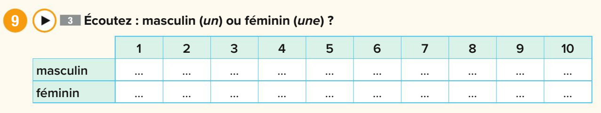
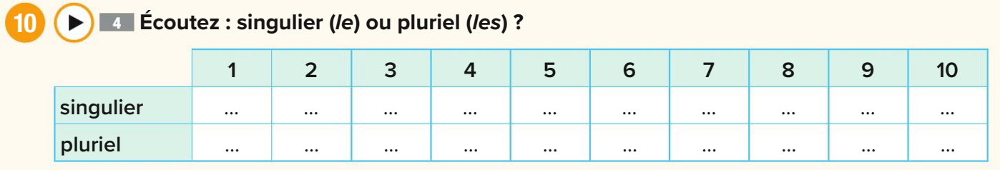
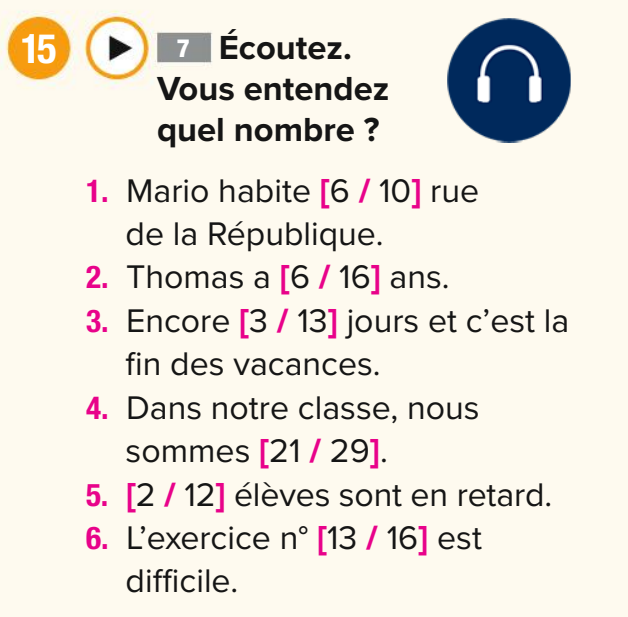
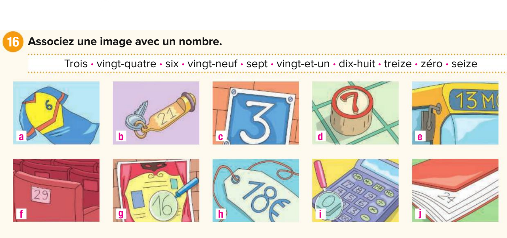
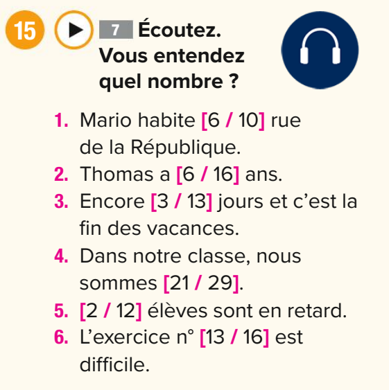

Module 1: Les Fondations (أساسيات المحادثة)
The essential building blocks for your very first conversation, from greetings to core verbs.

Greetings & Politeness (التحية والتعارف)
Bonjour!
النطق: بون-چووور
تفاصيل النطق الدقيق:
- المقطع الأول "Bon" مش "بُن" عادية. دي فيها غُنّة خفيفة من الأنف، زي الـ "on" في كلمة "song" بالانجليزي بس من غير ما تقفل بقك في الآخر.
- المقطع التاني "jour"، الـ "j" هنا هي الـ "چ" المصرية (زي چاكيت). الـ "r" هي الـ "R" الفرنسية اللي من الحلق (أقرب لصوت الغين الخفيفة).
Bonsoir!
النطق: بون-سواار
تفاصيل النطق الدقيق:
نفس غُنّة الـ "Bon" اللي فوق، ووراها "swar" واضحة.
The Core of a Sentence: Pronouns and Verbs
To say anything meaningful, you need a person (a pronoun) and an action (a verb). Let's learn the two most important verbs in all of French.
Subject Pronouns (Les Pronoms Sujets)
These are the words for "I", "you", "he", etc.
- Je (j') - I
- Tu - You (for one friend, family member)
- Il / Elle - He / She
- Nous - We
- Vous - You (for a stranger, a group of people, or to show respect)
- Ils / Elles - They (Ils for all-male or mixed groups, Elles for all-female groups)
The Verb 'Être' (To Be)
This is your go-to verb for describing identity, professions, and states of being.
- Je suis (I am)
- Tu es (You are)
- Il/Elle est (He/She is)
- Nous sommes (We are)
- Vous êtes (You are)
- Ils/Elles sont (They are)
The Verb 'Avoir' (To Have)
This verb is essential for talking about possession, age, and many expressions.
- J'ai (I have)
- Tu as (You have)
- Il/Elle a (He/She has)
- Nous avons (We have)
- Vous avez (You have)
- Ils/Elles ont (They have)
Introductions & "How Are You?"
Je m'appelle...
النطق: چوه ما-پيل...
تفاصيل النطق الدقيق:
- "Je" صوتها رخيم وقصير (zhuh), "m'appelle" بتتنطق ما-پيل.
Enchanté! / Enchantée!
النطق: أون-شون-تيه. (النطق واحد للاثنين)
تفاصيل النطق الدقيق:
- "En" و "chan" كلاهما بهما غُنّة أنفية. `Enchanté` للولد, `Enchantée` للبنت.
Comment allez-vous ? Formal / Plural
النطق: كو-مون تا-ليه ڤو؟
سر النطق (مهم جدًا):
ظاهرة الـ Liaison (الربط). حرف "t" الساكن في `comment` يرتبط بحرف العلة "a" في `allez`، فتسمعها "تا-ليه". هذا سر الطلاقة!
Ça va ? Informal
النطق: صا ڤا؟
Replies (الردود ونطقها الدقيق):
- Très bien: تريه بيان. (الـ "ien" في "bien" بها غُنّة "يان").
- Ça va: صا ڤا.
- Pas mal: پا مال.
- Bof...: بوف. (كلمة تعتمد على تعبير الوجه ونفخة الهواء أكثر من الصوت).

Putting It All Together: A First Dialogue
Notice how `être` (to be) is used to state identity and nationality.
Ana: Bonjour! Je m'appelle Ana. Comment allez-vous?
Marc: Bonjour Ana! Je vais très bien, merci. Je m'appelle Marc. Enchanté!
Ana: Enchantée! Vous êtes français, Marc?
Marc: Non, je suis canadien. Et vous?
Ana: Je suis égyptienne.
Module 2: L'Atelier de Prononciation (الخلاصة التقنية)
Mastering the technical secrets that make you sound authentically French.

The French Alphabet & Spelling
- A: [a] ah
- B: [be] bay
- C: [se] say
The Rules of 'C' and 'G' (قاعدة حرف C و G)
قاعدة حرف C:
- يتنطق "كاف" (K): قبل A, O, U. أمثلة: cocacola, calculatrice, cube.
- يتنطق "سين" (S): قبل E, I, Y. أمثلة: merci, cinema.
- إزاي ننطقه "سين" غصب عن القاعدة؟ نستخدم العلامة السحرية Ç (Cedilla). دي إشارة بتقولك "انطقني سين". أمثلة: français, garçon.
قاعدة حرف G:
- يتنطق "جيم" مصرية (Hard G): قبل A, O, U. أمثلة: garçon, gomme.
- يتنطق "چيم" معطشة (Soft J): قبل E, I, Y. أمثلة: girafe, gilet.
Accents & Sound Groups (العلامات ومجموعات الحروف)
العلامات (Accents) وتأثيرها على النطق:
- é (accent aigu): يجعل صوت الـ e "إيه" مقفولة وقصيرة. مثال: répétér.
- è (accent grave): يجعل صوت الـ e "إَه" مفتوحة. مثال: mère.
- ê (accent circonflexe): يطيل صوت الحرف قليلاً.
- ë (tréma): يفصل الحرفين في النطق. مثال: Noël (نو-إيل).
- ' (apostrophe): يحل محل حرف متحرك محذوف. مثال: Je aime (غلط) ← J'aime (صح).
مجموعات الحروف اللي صوتها واحد (أهم جزء):
- صوت "أُو" (like "go"): `o`, `eau`, `au` كلهم نفس النطق. أمثلة: chapeau.
- صوت غريب (like 'u' in 'burn'): `e`, `eu`. ضم شفايفك كأنك بتقول "أووو" ومن هذا الوضع حاول أن تقول "إيه". أمثلة: cheveu, bleu.
- صوت الغُنّة الأنفي "ـان / ـون": `in`, `im`, `un`, `ain`, `ien` كلهم نفس صوت الغنة "ـان". أمثلة: lundi, pain, égyptien.
- النهايات اللي بتتنطق "إيه": `ai`, `ais`, `er`, `ez`, `et`, `ait` كلهم صوتهم [e] (إيه). أمثلة: j'ai, aller.
Module 3: Le Monde Autour de Nous (الحاجات اللي حوالينا)
Let's learn how to name objects using the golden rule of French: Gender and Plurals.

Gender & Articles (المذكر والمؤنث)
This is the most important concept in this module. In French, every single noun is either masculine or feminine. You learn the gender with the word.
أدوات التعريف (The):
- le للمفرد المذكر. مثال: le garçon (الولد).
- la للمفرد المؤنث. مثال: la fenêtre (الشباك).
أدوات النكرة (A/An):
- un للمفرد المذكر. مثال: un garçon (ولد).
- une للمفرد المؤنث. مثال: une fenêtre (شباك).
Exercise: Masculin ou Féminin?
Listen. Based on the article (`un` or `une`), is the word you hear Masculine or Feminine?
Making Things Plural (الجمع)
Once you know the singular, the plural is simple!
- "the" (le, la) تصبح les في الجمع.
- "a/an" (un, une) تصبح des (بمعنى 'some') في الجمع.
- لصياغة الجمع، نضيف حرف "s" صامت في نهاية معظم الأسماء.
أمثلة: un crayon → des crayons | la chaise → les chaises
Exercise: Singulier ou Pluriel?
Listen carefully. Do you hear a singular word (`un, une, le, la`) or a plural one (`des, les`)?
Classroom Vocabulary (مفردات الفصل)
- un crayon / des crayons
- un livre / des livres (book)
- une chaise / des chaises
- une table / des tables
- un élève / des élèves (student)
- un professeur / des professeurs
- une fenêtre / des fenêtres
- une porte / des portes (door)
Module 4: Les Chiffres et le Calendrier (الأرقام والتقويم)
Learn to count, read the calendar, and schedule appointments.

Les Nombres 0-30 (Numbers)
- 0: zéro (زيه-رو)
- 1: un (آن - بغُنّة)
- 2: deux (دو) - x صامتة
- 3: trois (تروا) - s صامتة
- 4: quatre (كاتر)
- 5: cinq (سانك)
- 6: six (سيس)
- 7: sept (سيت) - p صامتة
- 8: huit (ويت) - h صامتة
- 9: neuf (نوف)
- 10: dix (ديس)
- 11-16: onze, douze, treize, quatorze, quinze, seize
- 17: dix-sept (حرفيًا 10+7)
- 18: dix-huit (Liaison: ديز-ويت)
- 19: dix-neuf
- 20: vingt (ڤـان - gt صامتين)
- 21: vingt et un (ڤان تيه آن)
- 22: vingt-deux (ڤان-دو)
- 30: trente (ترونت)
Exercise: Listen and Distinguish
Listen carefully to the audio. Which number do you hear in each pair?
الفرق الدقيق في النطق:
- [6 / 10]: six (سيس) vs dix (ديس)
- [6 / 16]: six (سيس) vs seize (سَـيـز - صوت أطول)
Exercise: Associez une image avec un nombre
Look at the image. It prompts you to match the items in a picture with their corresponding number. Try to describe what you see, e.g., "Il y a trois crayons."
The Calendar: Days, Months, and Dates

أيام الأسبوع (Les jours de la semaine):
- le lundi
- le mardi
- le mercredi
- le jeudi
- le vendredi
- le samedi
- le dimanche
شهور السنة (Les mois de l'année):
- janvier
- février
- mars
- avril
- mai
- juin
- juillet
- août
- septembre
- octobre
- novembre
- décembre
Asking for the Date (السؤال عن التاريخ):
- للسؤال "النهاردة إيه؟": Quel jour sommes-nous aujourd'hui?
- الإجابة: Nous sommes le samedi. (النهاردة السبت.)
- للسؤال عن التاريخ: Quelle est la date d'aujourd'hui?
- الإجابة: Nous sommes le 26 juillet.
Re-Listen and Master
This is a prompt to test your ear again. The audio is the same as the number-distinction exercise, helping you master those tricky sounds.
Module 5: La Boîte à Outils du Survivant (صندوق العدة)
Your essential phrases to ask questions and navigate any conversation like a pro.

Key Survival Phrases
-
Excusez-moi, comment dit-on «...» en français ?
إكس-كوزيه موا، كو-مون دي-تون «...» أون فرون-سيه؟ (Note the Liaison in "dit-on")
المعنى: "Excuse me, how do you say '...' in French?"
-
Ça s'écrit comment ?
صا سيه-كري كو-مون؟ ("s'écrit" بتتنطق كأنها كلمة واحدة "سيكري").
المعنى: "How is that written?"
-
Vous pouvez répéter, s'il vous plaît ?
ڤو پو-ڤيه ريه-پيه-تيه، سيل ڤو پليه؟ (Try to say it with a musical rhythm).
المعنى: "Could you repeat that, please?"
-
Je ne comprends pas.
چوه نوه كوم-پرون پا.
المعنى: "I don't understand." (Arguably more useful than "I don't know"!).
-
Je ne sais pas.
چوه نوه سيه پا. (The `ne...pas` is what creates the negative).
المعنى: "I don't know."